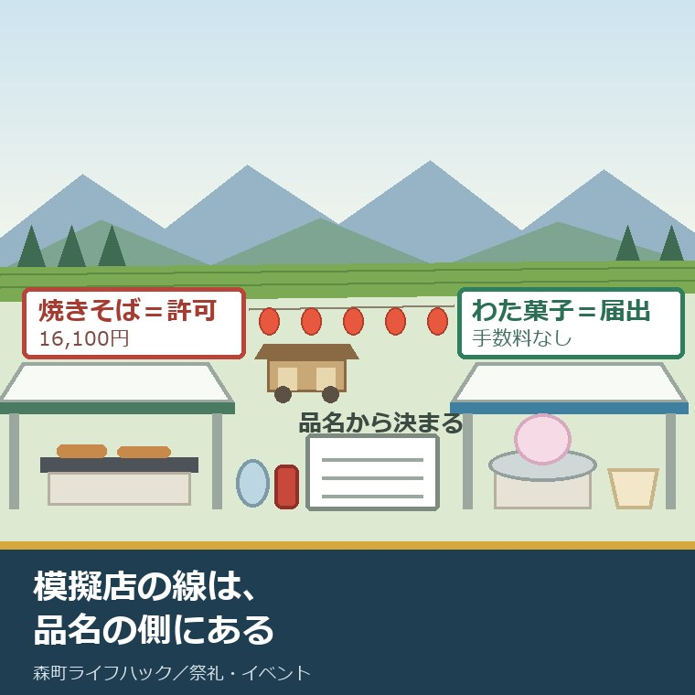
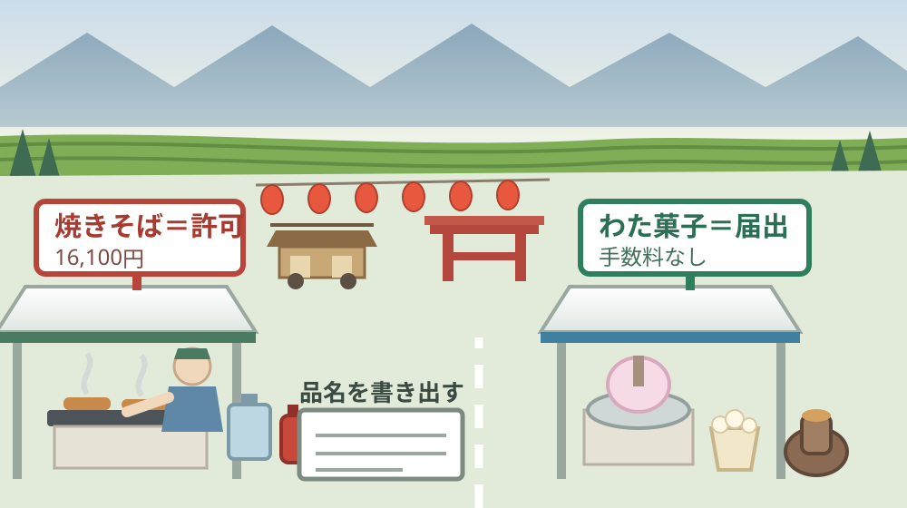
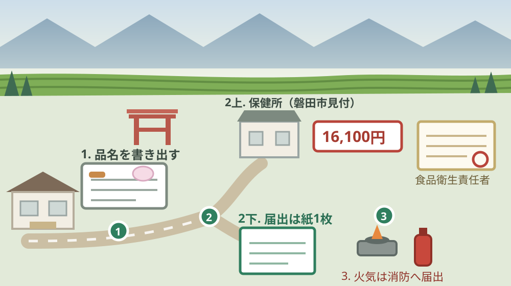

祭りの模擬店は届出か許可か｜森町の出店と16,100円

この記事の要点
Q. 地区の祭りで模擬店を任されました。保健所に届ければいいのか、許可が要るのか、判断がつきません。
A. 線は「何を売るか」で引かれます。静岡県公式によれば、焼きそば・たこ焼・かき氷は飲食店営業（露店）の許可、わた菓子・焼き芋・ポップコーンは届出で足ります。許可手数料は2026年4月1日の申請分から16,100円。窓口は磐田市見付の西部保健所です。まず品名を書き出してください。
静岡県周智郡森町（遠州森町）の地区で、祭礼や産業祭の模擬店を任された。焼きそばか、かき氷か、わた菓子か。品目を決める前に、手続きの話が出てきた。この記事は、そういう世話役の方に向けて書いています。
迷う理由は、はっきりしています。「届出」と「許可」は、言葉が似ているのに、費用も日数も窓口の重さもまったく違うからです。片方は書類1枚、もう片方は16,100円と設備の確認が付きます。
もう一つ、迷いを長引かせている原因があります。森町役場に聞けば済む話だと思われがちですが、この件の窓口は町ではありません。県の保健所です。しかも所在地は森町ではなく磐田市です。
今日は2026年8月22日。11月1日から3日間の森の祭りまで、あと2か月と少し。11月22日の森町産業祭の出店申込は、9月11日で締め切られます。いま決めておくと間に合います。
順に、公表されている内容から並べます。数字を並べたあとで、それが1張のテントでいくらになるかを計算します。
公式情報から確定できること
2026年8月22日時点で、静岡県公式サイトと森町公式サイト、袋井市公式サイトから確認できたことを並べます。出典は記事の末尾に載せています。
一つ目。模擬店で許可が要るかどうかは、出す食品の名前で決まります。静岡県公式の露店営業許可の案内は、許可を取れば提供できる食品と、許可が不要な食品を、それぞれ品名で列挙しています。
二つ目。許可が必要な側の品名です。同案内によれば、焼き鳥、フライ、たこ焼、お好み焼、焼きそば、フランクフルト、中華そば類、酒類、菓子製造業類似製品、喫茶類、かき氷、アイスクリーム（既製品の小分けのみ）が挙げられています。
三つ目。許可が不要な側の品名です。同案内は、単純加工販売、かるめ焼、あめ細工、わた菓子、焼き芋、炒り豆、爆弾あられ、ゆで栗、甘栗、甘酒、ポップコーン、チョコバナナ、りんごあめ、焼とうもろこしを挙げ、いずれも「届出は必要」と付記しています。
四つ目。出せない食品もあります。同案内は、生食用鮮魚介類、寿司、生食用食肉、生卵など、生食用食品全般を提供不可としています。地区の家庭で握った寿司を並べる形は、ここで止まります。
五つ目。許可の名前は「飲食店営業（露店）」です。同案内は、曳車、屋台、組立式など、移動可能な施設で食品を調理・提供する場合を対象としています。祭りのテントは、この形に当てはまります。
六つ目。手数料は2026年（令和8年）4月1日の申請分から16,100円です。静岡県公式の食品衛生許認可のページによれば、飲食店営業を含む3業種の新規申請手数料は16,100円、継続申請は12,800円です。2026年3月31日までの申請分は16,000円でした。
七つ目。同時に、他の業種の手数料も上がっています。同ページによれば、16業種は21,000円から21,100円へ、7業種は14,000円から14,100円へ、4業種は9,600円から9,700円へ改定されました。複合型製造業の2業種だけは30,000円のままです。
八つ目。許可の申請には、食品衛生責任者の資格を証する書類が要ります。静岡県公式の露店営業許可の案内は、必要書類として、申請内容の整理番号控え、施設の図面、食品衛生責任者の資格証明書（コピー可）、HACCPに沿った衛生管理計画などを挙げています。
九つ目。申請から許可までには日数がかかります。同案内によれば、申請書の受理時に駐車場で設備一式を確認し、その調査から許可の連絡まで「1週間程度」かかります。さらに、月1回開催の許可証交付講習会を受講したあとに許可証が交付されます。
十番目。組織内部の小規模な催しには、別の届出の道があります。静岡県公式のバザー・イベントの案内は、「学校、町内会、会社等の組織内部で親睦等を目的として行う小規模なイベント」をバザー等開催届の対象とし、提供者と飲食者が特定できる単発の催しであれば、営業とはみなさず届出のみで実施できるとしています。
十一番目。広く人を集める催しは、こちらではありません。同案内は、露店やキッチンカーが出店して広く集客するイベントをイベント等開催届の対象とし、この場合は営業許可施設の確認が必要で、許可を取るまで営業できないとしています。
十二番目。どちらの届出でも、扱えない食品があります。同案内は、精肉、鮮魚、生食、前日調理品、自宅調理品を対象外としています。前の晩に自宅で仕込む段取りは、この一行で組み直しになります。
十三番目。森町の窓口は、森町にありません。静岡県公式の食品営業許可等に関するお問合せ先一覧（2026年8月13日更新）によれば、磐田市・袋井市・森町を所管するのは西部保健所衛生薬務課で、所在地は磐田市見付3599-4、電話は0538-37-2245です。
十四番目。森町産業祭の募集要項にも、この点が書かれています。森町公式の第39回森町産業祭「もりもり2万人まつり＆農協祭」出店者募集は、「飲食物の調理、製造又は酒類の販売など保健所等の許可が必要な場合は、各店で責任を持って申請してください」としています。実行委員会がまとめて取ってくれる形ではありません。
十五番目。その産業祭の日程と費用も確定しています。同ページによれば、開催は令和8年11月22日（日曜日）の午前9時から午後3時30分、場所は森町文化会館お祭り広場及び駐車場、出店料はテント1張につき町内8,800円・町外17,600円（いずれも税込）です。キッチンカーでの出店はできません。
十六番目。申込の締切は令和8年9月11日（金曜日）です。同ページによれば、受付は8月14日（金曜日）から始まっており、書類申請と電子申請のどちらでも可能で、出店可否は事務局が9月下旬に決定します。テント1コマは3.6m×2.7m、机1台と椅子2脚が付きます。
十七番目。火を使う露店には、消防の届出が別にあります。袋井市公式によれば、袋井市森町広域行政組合火災予防条例に基づき、ガスコンロや発火機などを使用する場合には、消火器の準備と露店等の開設の届出が必要です。担当は消防本部予防課予防企画係（0538-44-5114）です。
十八番目。この条例改正には、はっきりした発端があります。同ページは、平成25年8月15日に京都府福知山市の花火大会で起きた火災を踏まえた改正だとしています。屋台の火は、祭りの風景であると同時に、条例が名指しした対象でもあります。

この絵で描きたかったのは、線が「規模」ではなく「品名」の側に引かれているという点です。売上が小さくても焼きそばなら許可が要り、行列ができてもわた菓子なら届出で足ります。世話役が最初に確かめるのは、鍋の大きさではなく、品書きです。
森町の祭りと産業祭に置き換えると、いくらの話になるか
ここからは、公表された金額を、テント1張の側に割り戻します。私の計算であることを先に断っておきます。
森町産業祭に町内から出るとき、テント代は8,800円です。そこに焼きそばを載せると、露店営業許可の16,100円が上に乗ります。合わせて24,900円。テント代の2.83倍が、火を入れる前に決まります。
1食400円の焼きそばで考えます。24,900円を回収するには、63食を売る必要があります。午前9時から午後3時までの6時間で、1時間あたり10食を超える計算です。
同じテントでわた菓子を回すと、話が変わります。許可が要らないので、費用はテント代の8,800円だけ。1本300円なら30本で回収に届きます。差の16,100円は、焼きそばで41食分に当たります。
この差を、地区の祭礼に置き換えます。森の祭りは11月1日から3日間。森町公式によれば、昼は神輿のあとを屋台がお供し、夜は夜店に群がる見物人の中を引き回します。その夜店の一つを、地区で持つかどうかという話です。
地区の祭礼で1日だけ出すなら、16,100円は重い額です。3日間出しても、来年また同じ額がかかるのかどうかは、公表資料からは読み取れませんでした。許可の有効期間と、県内の他の催しでも使えるかどうかは、この記事では未確認のまま残します。
ただし、道は一本ではありません。町内会の親睦の範囲でおさまる催しなら、バザー等開催届の側に入る可能性があります。静岡県公式は、提供者と飲食者が特定できる小規模で単発の催しを、その対象としています。
森の祭りの夜店のように、誰でも買える形で広く売る場合は、こちらには当たりません。境目は「内輪か、外向きか」です。自分の地区がどちらに当たるかは、催しの実態を保健所に説明して決めるほかありません。
良い点：この線引きの、よくできているところ
まず、この仕組みのよくできているところを数えます。批判の前に置くのは、私の書き方の順番です。
一つ目。基準が品名で示されているので、素人が判断できます。「加熱の有無」や「規模」で書かれていたら、世話役ごとに解釈が割れます。焼きそばは許可、わた菓子は届出、と品名で並べてあるから、紙に品書きを書けば答えが出ます。
二つ目。出せない食品が、はっきり名指しされています。生食用鮮魚介類、寿司、生食用食肉、生卵。ここが曖昧だと、善意で出した一品が事故になります。名指しは、断る側の世話役を守ります。
三つ目。内輪の催しに、別の軽い道が用意されています。町内会の親睦のバザーにまで16,100円と設備確認を求めない形は、担い手の実情に合っています。制度が一本しかなければ、多くの地区は模擬店をやめる方に倒れます。
四つ目。森町産業祭の募集要項が、責任の所在を先に書いています。「各店で責任を持って申請してください」という一文は、冷たく読めますが、締切間際の押し付け合いを防ぎます。9月11日の締切前に読めば、間に合う位置に置かれています。
五つ目。手数料の改定が、事前に告知された形で行われています。2026年3月31日までは16,000円、4月1日の申請分から16,100円。県公式のページに新旧が並記されているので、いつの申請かで迷いません。
注文したい点：公表情報だけでは埋まらないところ
その上で、一事業者として注文したい点を並べます。役所の中の人も同じ制約の中で動いていることは承知の上です。
一つ目。地区の祭礼が「内輪」か「外向き」かの判定基準が、公表資料からは読み取れません。森の祭りの夜店は、地区の人だけで回しますが、買うのは町外から来た見物人です。この形をどちらで扱うのかは、電話をかけないと分かりません。
二つ目。提出期限が公表されていません。バザー等開催届もイベント等開催届も、「事前に相談」「詳細が決まりましたら」とだけ書かれています。何日前までなら間に合うのかが分からないと、世話役は日程を逆算できません。
三つ目。許可の有効期間が示されていません。1回取れば来年も使えるのか、催しごとに取り直すのか。ここが分からないと、16,100円が1年分なのか1日分なのかも決まりません。
四つ目。窓口が3つに分かれています。食品は県の西部保健所（磐田市見付）、火気は袋井の消防本部、出店枠は森町産業祭実行委員会。それぞれ正しい分担ですが、初めての世話役には、3か所に電話する順番までは見えません。
五つ目。森町の側から、地区の祭礼向けの案内が出ていません。産業祭の募集要項には保健所への案内がありますが、11月の森の祭りで夜店を出す地区が何を確かめるかは、町公式のどのページにも見当たりませんでした。一事業者としては、この1枚があると助かります。

対案・結論：今日、世話役が確かめられること
結論を急がないと決めたうえで、今日から動ける順番を書きます。順番はイラストのとおりです。
| 順番 | 確かめること | 確認先 |
|---|---|---|
| 1 | 出す予定の品名を、一行ずつ書き出す | 地区の世話役どうし。去年の写真と品書きを見る |
| 2 | その品名が許可側か届出側か | 静岡県公式の露店営業許可の品名リストと突き合わせる |
| 3 | 催しが内輪か、広く集客するか | 西部保健所衛生薬務課 0538-37-2245（磐田市見付3599-4） |
| 4 | 食品衛生責任者が地区にいるか | 過去に資格を取った人の証書を探す。無ければ講習の日程を確認 |
| 5 | ガスコンロなど火気器具を使うか | 袋井消防本部 予防課予防企画係 0538-44-5114 |
| 6 | 産業祭に出るなら出店枠と締切 | 森町産業祭実行委員会事務局 0538-85-6319（締切9月11日） |
1は、今日できます。紙に品名を書き出すだけです。ここで「焼きそば」と書いた瞬間に、16,100円と食品衛生責任者の話が確定します。
2も今日できます。県の品名リストは、そのまま読める形で並んでいます。迷うのは「たません」「五平餅」のように、リストにない品名が出たときだけです。
3から先は電話が要ります。ただし1と2が終わっていれば、電話は5分で済みます。品名が決まっていない状態でかけると、相手も答えようがありません。
4は、地区の中を探す作業です。飲食業に勤めた人、給食に関わった人が、資格を持っていることがあります。ここで一人見つかると、来年以降の負担がまるごと変わります。
祭りの当番や寄付の回り方そのものが重い、という話であれば、そちらが先です。八月に動き出す当番と寄付の実際は、十一月の森の祭りは八月に当番と寄付が動き出すという記事にまとめました。
祭りを支える側の負担を、金と人の両方から見たい方もいます。その全体像は祭りを支える側の負担を数えた記事に書きました。模擬店は、その負担の一部です。
当日の人と車の動きが気になる方は、別の記事があります。催しの日に地区へ流れ込む車の扱いは、催しの日の交通と近隣への配り方をまとめた記事で整理しました。
地区に残す記録
ここからは、確認した内容を紙1枚に残すための項目です。次の年に同じことを調べ直さないためのものです。
書き留めるのは、出した品名、許可か届出のどちらで通したか、申請した年月日、手数料の金額、食品衛生責任者になった人の氏名です。この5つで、来年の世話役が引き継げます。
あわせて、西部保健所衛生薬務課の電話番号（0538-37-2245）、袋井消防本部予防課の電話番号（0538-44-5114）、産業祭実行委員会事務局の電話番号（0538-85-6319）、消火器の保管場所、給水タンクや机の借り先を並べておきます。
屋台や道具の置き場所ごと引き継ぐ地区もあります。建物と土地の名義まで絡む話は、屋台の収納庫の名義と敷地を確かめた記事に書きました。模擬店の道具箱も、同じ問題を小さくしたものです。
実家の名義、境界、農地、道路まで含めて順に整理したい方は、ふじがおか実家カルテの森町相談窓口もご利用ください。住所が分かれば、建物と敷地のどちらについても、確認する順番を整理できます。
大石の視点
ここからは、私（大石浩之）の個人の考えです。公的な事実とは分けてお読みください。この件について、私自身が森町の地区で模擬店の届出を出した体験があるわけではありません。以下は公表資料を読んだうえでの私の見方です。
私が制度を見るとき、まず確かめるのは条文の筋の良さではありません。その制度を、現に担っている人が回せるかどうかです。森町の地区で模擬店を持つのは、たいてい本業を持った50代60代の世話役で、平日の昼に磐田まで出る時間はありません。
その目で見ると、この手続きには一つ、重い箇所があります。設備一式を持って保健所へ行き、駐車場で確認を受ける工程です。テントも鉄板も給水タンクも、車に積んで磐田市見付まで運ぶことになります。
金額のほうは、額そのものより性質が問題です。16,100円は、テント代8,800円の1.83倍。焼きそば41食分。この割り戻しをやらないと、「たかが1万6千円」で話が終わり、当日の売上目標に反映されません。
私は査定の場でも同じことをやっています。総額で止めず、必ず月あたり・1軒あたり・1食あたりまで割ります。そこまで割ると、家族も地区も、初めて自分ごととして数字を見ます。
ここは正直に書きます。16,100円という額が、地区の祭礼にとって高いか安いか、私にはまだ判断がつきません。設備の確認と講習会に人を割く県の側にも費用があります。一方で、この額が理由で夜店を一つ減らす地区が出るなら、それは町の風景が縮むことでもあります。この二つを、私はまだ整理できていません。
それでも一つだけ言い切ります。決めるのは品名が先で、金額はその後です。「今年は何を出そうか」を先に決め、あとから手続きを調べるから、9月の締切前に慌てることになります。
不動産の目で見ると、この話は担い手の話に直結します。食品衛生責任者が地区に一人いるかどうかで、模擬店を続けられるかが決まります。その一人は、たいてい高齢です。名前を紙に書いて残しておかないと、次の年に消えます。
もう一つ、私が気にしているのは窓口の距離です。森町の届出先は磐田市見付。私の商売の地元です。県中遠総合庁舎の前は毎週通りますが、あの建物が森町の祭りの窓口だと知っている森町の方は、多くないと感じています。これは制度の欠陥ではなく、周知の距離の問題です。
結論が保留のままでも、確認済みの事実が一つ増えたなら、それは前進です。品名が決まった。許可か届出かが分かった。どちらも、次の判断を軽くします。
まとめ
- 静岡県公式の露店営業許可の案内によれば、露店で食品を調理・提供する場合は「飲食店営業（露店）」の許可が必要（2026年8月22日確認）
- 許可を取れば提供できる食品として、焼き鳥、フライ、たこ焼、お好み焼、焼きそば、フランクフルト、中華そば類、酒類、菓子製造業類似製品、喫茶類、かき氷、アイスクリーム（既製品の小分けのみ）が挙げられている
- 許可が不要（届出は必要）な食品として、単純加工販売、かるめ焼、あめ細工、わた菓子、焼き芋、炒り豆、爆弾あられ、ゆで栗、甘栗、甘酒、ポップコーン、チョコバナナ、りんごあめ、焼とうもろこしが挙げられている
- 生食用鮮魚介類、寿司、生食用食肉、生卵など生食用食品全般は提供できない
- 静岡県公式の食品衛生許認可のページによれば、飲食店営業を含む3業種の新規申請手数料は、2026年（令和8年）4月1日の申請分から16,100円、継続申請は12,800円
- 同時に16業種は21,100円、7業種は14,100円、4業種は9,700円へ改定され、複合型製造業の2業種は30,000円で据え置き
- 申請には食品衛生責任者の資格証明書、施設の図面、HACCPに沿った衛生管理計画などが要り、調査から許可の連絡まで1週間程度かかる
- 許可証は、月1回開催の許可証交付講習会を受講したあとに交付される
- 静岡県公式のバザー・イベントの案内によれば、学校・町内会・会社等の組織内部で親睦等を目的として行う小規模な催しはバザー等開催届の対象で、届出のみで実施できる
- 露店やキッチンカーが出店し広く集客するイベントはイベント等開催届の対象で、営業許可施設の確認が必要になる
- どちらの届出でも、精肉、鮮魚、生食、前日調理品、自宅調理品は扱えない
- 静岡県公式の問合せ先一覧によれば、磐田市・袋井市・森町を所管するのは西部保健所衛生薬務課（磐田市見付3599-4、0538-37-2245）
- 森町公式の第39回森町産業祭の出店者募集は、開催が令和8年11月22日（日曜日）、申込締切が令和8年9月11日（金曜日）、出店料が町内テント1張8,800円・町外17,600円（税込）、キッチンカー不可としている
- 同ページは「飲食物の調理、製造又は酒類の販売など保健所等の許可が必要な場合は、各店で責任を持って申請してください」としている
- 袋井市公式によれば、袋井市森町広域行政組合火災予防条例に基づき、ガスコンロや発火機を使う露店には消火器の準備と露店等の開設の届出が必要
- 森町公式によれば、森の祭は11月1日から3日間で、夜になると夜店に群がる見物人の中を屋台が引き回される
- 私の計算では、産業祭に町内から焼きそばで出る場合、テント代8,800円と許可16,100円で24,900円となり、1食400円なら63食で回収に届く
- 私の計算では、許可の要らないわた菓子なら8,800円のみで、1本300円なら30本。差の16,100円は焼きそば41食分に当たる
よくある質問
Q1. 祭りの模擬店で焼きそばを出すには、許可と届出のどちらが必要ですか。
A1. 静岡県公式の露店営業許可の案内によれば、焼きそばは飲食店営業（露店）の許可が必要な食品に挙げられています。焼き鳥、フライ、たこ焼、お好み焼、フランクフルト、中華そば類、酒類、喫茶類、かき氷も同じ扱いです。一方、わた菓子、焼き芋、ポップコーン、チョコバナナ、りんごあめ、甘酒などは許可が不要で、届出が必要とされています。判断の起点は、火を使うかどうかではなく、何を出すかです。
Q2. 森町で模擬店を出すとき、届出先はどこになりますか。
A2. 静岡県公式の食品営業許可等に関するお問合せ先一覧によれば、磐田市・袋井市・森町を所管するのは西部保健所衛生薬務課で、所在地は磐田市見付3599-4、電話は0538-37-2245です。森町役場ではなく、県の保健所が窓口になります。あわせて、ガスコンロなどの火気器具を使う露店は、袋井市森町広域行政組合火災予防条例に基づく届出と消火器の準備も必要です。
Q3. 露店営業許可の手数料は、いくらになりましたか。
A3. 静岡県公式の食品衛生許認可のページによれば、飲食店営業を含む3業種の新規申請手数料は、2026年（令和8年）4月1日の申請分から16,100円です。それまでは16,000円で、100円の引き上げになります。同じ区分の継続申請は12,800円です。露店営業も飲食店営業（露店）としてこの区分に入るため、16,100円が適用されます。
最後に一つだけ。ここに書いた品名の区分、手数料、締切、窓口は、いずれも2026年8月22日時点で公表されている内容です。露店営業許可の有効期間、同じ許可が県内の他の催しでも使えるかどうか、バザー等開催届とイベント等開催届の提出期限、地区の祭礼がどちらの届出に当たるかの判定は、公表資料からは確認できていません。動く前に、必ず西部保健所衛生薬務課（0538-37-2245）と、火を使う場合は袋井消防本部予防課（0538-44-5114）へご確認ください。
参考にした公式情報
- 露店営業許可について／静岡県（曳車・屋台・組立式等の移動可能な施設で食品を調理・提供する場合に「飲食店営業（露店）」の許可が必要とされていること、許可により提供できる食品として焼き鳥・フライ・たこ焼・お好み焼・焼きそば・フランクフルト・中華そば類・酒類・菓子製造業類似製品・喫茶類・かき氷・アイスクリーム（既製品小分けのみ）が挙げられていること、許可不要（届出は必要）な食品として単純加工販売・かるめ焼・あめ細工・わた菓子・焼き芋・炒り豆・爆弾あられ・ゆで栗・甘栗・甘酒・ポップコーン・チョコバナナ・りんごあめ・焼とうもろこしが挙げられていること、生食用鮮魚介類・寿司・生食用食肉・生卵など生食用食品全般が提供不可とされていること、手数料が「16,000円（R8.3.31まで）※R8.4.1以降の申請分からは16,100円に改定」と記載されていること、必要書類に申請内容の整理番号控え・施設の図面・食品衛生責任者の資格証明書（コピー可）・HACCPに沿った衛生管理計画が挙げられていること、申請書受理時に駐車場で設備一式を確認し調査から許可の連絡まで1週間程度かかること、月1回開催の許可証交付講習会の受講後に許可証が交付されることを2026年8月22日に確認。ページ更新日 2025年12月26日）
- 食品衛生許認可について／静岡県（食品衛生法に基づく営業許可の対象が32業種であること、飲食店営業がその一つであること、令和8年4月1日からの新規申請手数料が複合型製造業2業種30,000円・16業種21,100円・飲食店営業など3業種16,100円・7業種14,100円・4業種9,700円であること、継続申請が同順に24,000円・16,800円・12,800円・11,200円・7,700円であることを2026年8月22日に確認。ページ更新日 2026年4月1日）
- バザー・イベントで食品を提供する際の届出／静岡県（バザー等開催届の対象が「学校、町内会、会社等の組織内部で親睦等を目的として行う小規模なイベント」であり提供者と飲食者が特定できる単発の催しであること、この場合は営業とみなされず届出のみで実施できること、イベント等開催届の対象が「露店やキッチンカーが出店し、広く集客するイベント」であり営業許可施設の確認が必要で許可取得まで営業できないこと、精肉・鮮魚・生食・前日調理品・自宅調理品が対象外であることを2026年8月22日に確認。ページ更新日 2025年5月8日）
- 食品営業許可等に関するお問合せ先について／静岡県（磐田市・袋井市・森町を所管するのが西部保健所衛生薬務課であること、所在地が〒438-8622 磐田市見付3599-4であること、電話番号が0538-37-2245であることを2026年8月22日に確認。ページ更新日 2026年8月13日）
- 第39回森町産業祭「もりもり2万人まつり＆農協祭」出店者募集／静岡県森町（開催が令和8年11月22日（日曜日）午前9時00分〜午後3時30分、販売時間が午前9時00分〜午後3時00分、雨天決行・荒天中止であること、場所が森町文化会館お祭り広場及び駐車場であること、出店できる者が静岡県内の方に限られること、出店料がテント1張につき町内出店者8,800円（税込）・町外出店者17,600円（税込）であること、テント1コマ（3.6m×2.7m）につき机（販売台）1台（1.8m×0.9m）と椅子2脚が準備されること、「キッチンカーでの出店はできません」と記載されていること、申込が書類申請または電子申請で受付が8月14日（金曜日）から・締切が令和8年9月11日（金曜日）・出店可否を事務局が9月下旬に決定すること、「飲食物の調理、製造又は酒類の販売など保健所等の許可が必要な場合は、各店で責任を持って申請してください」と記載されていること、問い合わせ先の電話番号が0538-85-6319であることを2026年8月22日に確認。ページ更新日 2026年7月14日）
- 森の祭・かさんぼこ／静岡県森町（森の祭が11月1日から3日間行われること、昼は神輿のあとを屋台が静かにお供し、夜になると夜店に群がる大勢の見物人の中を右に左にと威勢よく引き回されること、お囃子に石松囃子・屋台下（弥太下）・宮囃子（ミコシ囃子）・鉄火囃子・雨垂れがあること、舞児還しが3日間の祭りの最後を最高潮に盛り上げる行事で舞児を各町内の屋台に乗せて家まで送り届けるものであること、担当が社会教育課文化振興係（電話0538-85-1114）であることを2026年8月22日に確認。ページ更新日 2019年3月5日）
- イベント等における露店等の開設届出と消火器の準備について／袋井市（根拠が袋井市森町広域行政組合火災予防条例であること、平成25年8月15日に京都府福知山市の花火大会で起きた火災を踏まえた改正であること、ガスコンロ・発火機などを使用する場合に消火器の準備と露店等の開設の届出が必要であること、担当が消防本部予防課予防企画係（電話0538-44-5114）であることを2026年8月22日に確認。ページ更新日 2021年5月31日）

最終確認日：2026-08-22 ／ 本記事は公表情報と執筆者の見解を分けて記載しています。露店営業許可の有効期間、同じ許可が県内の他の催しでも使えるかどうか、バザー等開催届・イベント等開催届の提出期限、地区の祭礼がどちらの届出に当たるかの判定は、公表資料から確認できていません。制度・手数料・締切は変更されることがあります。動く前に、必ず静岡県西部保健所衛生薬務課および袋井消防本部予防課へご確認ください。